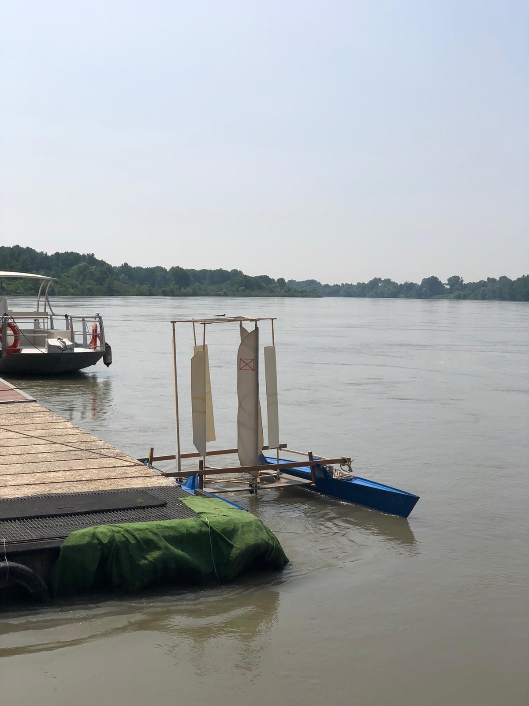
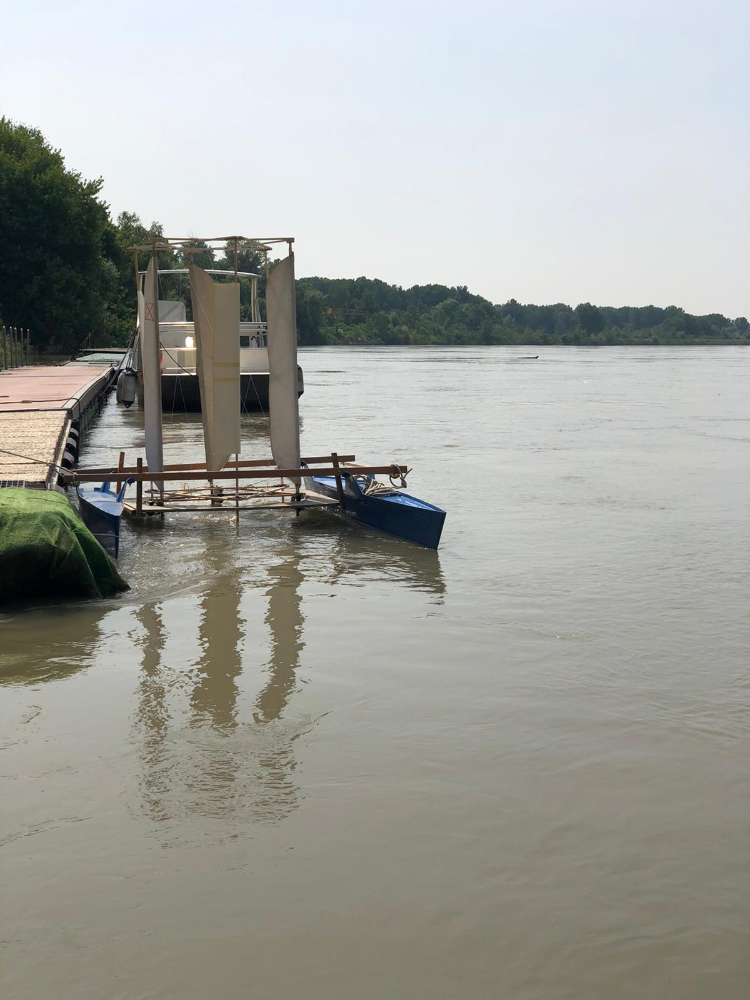

Catamarano “Controvento”
Controvento è il nome di questo catamarano, obiettivo del progetto è costruire un catamarano in grado di avanzare dritto contro vento. La possibilità teorica di questo concetto è già stata ampiamente dimostrata da Hammit (1) e altri. Nessuno oggi si meraviglia più del fatto che una barca a vela possa avanzare controvento bordeggiando; ma può una barca a vela avanzare diritta contro vento su una rotta parallela alla direzione del vento? Con una attrezzatura tradizionale no, nemmeno con una ala rigida, con un aeromotore forse si, ed è quello che voglio dimostrare. Un aeromotore (anche detto mulino a vento) è una macchina che trasforma l’energia eolica in energia meccanica o in energia elettrica; queste macchine sono oggi ampiamente collaudate e caratterizzano alcuni paesaggi di comune osservazione; ci sono installazioni sperimentali di aeromotori su piattaforme galleggianti e prototipi di barche mosse da aeromotore, in queste realizzazioni l’aeromotore aziona un elica immersa. Gli aeromotori possono essere ad asse orizzontale o verticale, i primi sono molto più diffusi e sono le eliche che comunemente vediamo percorrendo le strade, fra i secondi ci sono il Darrieus (2) (molto efficiente ma non parte da solo) e la cicloturbina (3), quest’ultima richiede un meccanismo che regola l’incidenza della pala nei vari punti della circonfernza. Un catamarano dotato di elica aerea ad asse orizzontale collegata con un elica immersa è già stato costruito col nome Revelation (4) (vedi foto); il risultato è una velocità media a tutte le andature inferiore alla vela tradizionale, facilità di manovra, avanza dritto contro vento a velocità inferiore alla Velocity Made Good di una barca tradizionale col vantaggio di non richiedere la larghezza di acqua necessaria a bordeggiare. Nella navigazione in mare aperto l’affidabilità è più importante del massimo rendimento; la barca a vela tradizionale è più affidabile di un aeromotore con parti in movimento; il catamarano Controvento ha il vantaggio di poter essere utilizzato sia nella modalità aeromotore sia nella modalità profili alari fissi; nelle andature che vanno dalla bolina larga in giù conviene quest’ultima modalità. Nel campo della propulsione navale oltre alla comune elica ad asse orizzontale è noto il propulsore ad asse verticale detto Voith-Schneider; l’accoppiamento di un elica aerea ad asse orizzontale con un elica immersa richiede 2 giunti ad ingranaggi conici e un albero di trasmissione verticale; al contrario un aeromotore ad asse verticale e un propulsore VS possono essere accoppiati senza ingranaggi; il fisico H M Barkla ha fatto notare questo vantaggio (5).
Lo stesso Barkla ha inventato il linear water-wind mill (6) si tratta di un ala destinata a captare il vento calettata sullo stesso asse di una paletta immersa, questo complesso ad asse verticale è libero di scorrere in un binario orizzontale perpendicolare alla direzione del vento idealmente posto sulla superficie dell’acqua, una volta che a questo profilo aero-idro dinamico viene impressa una velocità iniziale i profili trovano un angolo di equilibrio e l’ala cammina generando energia. Nelle andature che vanno dalla bolina larga alla poppa l’imbarcazione a vela o ala rigida ottiene una velocità superiore all’imbarcazione dotata di aeromotore; nell’andatura contro vento la barca a vela necessita di una certa larghezza del passaggio per bordeggiare; l’imbarcazione dotata di aeromotore non ha bisogno di larghezza del passaggio; l’ideale sarebbe utilizzare la propulsione che deflette il vento nelle andature dal traverso al largo e la propulsione ad aeromotore controvento. Il catamarano Controvento è in grado di sommare questi due vantaggi. Prima di Controvento ho costruito un catamarano lungo 6 metri dotato di cicloturbina conica alta 8 metri e propulsore VS, la cicloturbina è stata provata nella galleria del vento del Politecnico di Torino nell’ambito di un programma di ricerca finanziato dal C.N.R. La meccanica della trasmissione è abbastanza complessa e i risultati sperimentali incerti. (7) Più recentemente ho costruito un modello del catamarano Controvento costituito da 2 scafi e 2 traverse, nello spazio quadrato compreso fra gli scafi e le traverse è alloggiato un binario circolare, all’interno di questo binario circola una struttura prismatica costituita da 2 triangoli orizzontali e 3 assi verticali, ai vertici del triangolo inferiore sono fissati 3 carrelli composti da 3 ruote ciascuno che abbracciano il binario, gli elementi verticali sono costituiti da un ala in aria e da una paletta in acqua, ala e paletta sono calettate sullo stesso asse, ogni complesso ala-paletta si comporta come il linear water-wind mill, le ali nell’aria si assestano da sole al migliore angolo di incidenza e analogamente le palette nell’acqua trovano il migliore angolo di incidenza; nelcomplesso l’aeromotore capta l’energia del vento e le palette forniscono una spinta in avanti in direzione contraria a quella del vento. Il vantaggio di questo catamarano rispetto ad altre imbarcazioni dotate di aeromotore è quello di poter essere utilizzato anche in modalità di deviazione del vento come una vela o ala; infatti bloccando la rotazione dell’aeromotore abbiamo 3 ali che sfruttano il vento come vele alari e tre palette in acqua che svolgono funzione antideriva. La velocità media di una barca a vela (flessibile o ad ala rigida) tradizionale a tutte le andature è superiore a quella di imbarcazione ad aeromotore, quest’ultima ha il vantaggio di poter avanzare anche nell’angolo morto. Il catamarano “controvento” può essere utilizzato in modalità aeromotore oppure in modalità tradizionale sommando così i vantaggi di entrambe le modalità.
Giuseppe Gigliobianco Cremona,
g.gigliobianco@fastpiu.it
1) Hammit A. G. optimum wind propulsion, proceedigs of the 1st AIAA symposium april 1969
2) P. South and R. Rangi “Comparison between three analytical models of a darrieus wind turbine, 2nd intenational symposium
on wind energy systems (SISWES) october 1978, Amsterdam
3) N. D. Ham and H. M. Drees, Analytical and experimental evaluation of Cycloturbine aerodinamic performance; Wind Technology Journal,
fall and winter 1978
4) AYRS 105 high speed sailing october 1989
5) H.M. Barkla, The Vertical-Axis Turbine/Propeller for Ship Propulsion Wind Engineering Vol. 8, No. 4 (1984)
6) Barkla H. M. the linear wind/water-mill propeller, Proceedigns of the XII AIAA symposium october 1982 S. Francisco
7) Giuseppe Gigliobianco: A vertical axis windmill propelled catamaran, The Ancient Interface XVI, proceedigs of the 16th American
Institute of Aeronautics and Astronautics Symposium on the aero/hydronautics of sailing, october 1986
8) G.Gigliobianco: A Self Trimming Vertical Axis Windmill Propelled Catamaran, The Ancient Interface XVII, proceedigs of
the 17th American Institute of Aeronautics and Astronautics Symposium on the aero/hydronautics of sailing, october 1987
A self trimming vertical axis windmill propelled catamaran
The “Linear wind/water mill propeller” was first presented by Professor H. M. Barkla in the XII symposium of the American Institute of Aeronautics and Astronautics (S. Francisco, October 1982). This is a mast with sail and keel without hull. Obviously this “thing” cannot float, so it is setted onto a truck and the truck runs onto a rail above the surface of the water and the rail is at square angle with the true wind. This “mill” yields a thrust directed against the wind. Subsequently Barkla proposed a “vertical axis turbine propeller for ship propulsion” (Wind Engineering, London 1984, Vol 8, No 4). In this work Barkla proposes to put together three “mills” rotating around a central shaft this shaft being coupled to a Voith Schneider propeller in the water; the blades of the Voith Schneider propeller are trimmed via rods and cranks by an eccentric. In the first video a full size catamaran can be seen equipped with a vertical axis windmill and a Voith Schneider propeller. This cat is presented in AYRS 102 1986. (thanks to my friend Paolo Carotta who helped in projecting and building). Since then I have worked to lighten the craft; I have eliminated the central shaft, eccentric, rods and cranks; each wing is fastened to a mast with his blade and the three masts are enclosed in a truss that rotates into a circular rail; each wing-blade complex is self trimming; in conclusion we have three linear mill running in circle. This craft was presented at the 17th AIAA symposium (Stanford, CA 1987). In the last video the catamaran is equipped with six wings but the improvement is not that gret. (thanks to Mario Tomatis for the videos and photos)
I hope to build a full size craft in the future,
Giuseppe Gigliobianco,
Cremona





-
PARTNER
-
NEWS
30/05/2020
A Voith Schneider propelled catamaran

-
PATROCINI
-
Manifestazione patrocinata da:
-